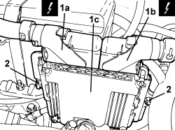

1056F82 CONTROL UNIT (ONE) FOR INJECTION IGNITION SYSTEM - R.R.
- Path
- Procedures > 10 ENGINE > 1056 PETROL INJECTION SYSTEM > 1056F PETROL DIRECT INJECTION SYSTEM > 1056F82 CONTROL UNIT (ONE) FOR INJECTION IGNITION SYSTEM - R.R.
- Kind
- repair procedure (removal / refitting; the operation number is the code)
- Applies to
- engines: 2.2 JTS, 3.2 JTS; all production periods
- Interactive page
- https://sloeber94.github.io/elrnDB-aBrrSpdr/en/#/946001932
Applies to: engines: 2.2 JTS, 3.2 JTS; all production periods
 Removing
Removing
 Refitting
Refitting1. Disconnect the electrical connections (1a) and (1b) for the injection-ignition control unit (1c).
Description | Connector | |
|---|---|---|
1a | Engine management control unit |
Description | Connector | |
|---|---|---|
1b | Engine management control unit |
2. Loosen the nuts securing the mounting brackets and remove the injection-ignition control unit (1c).

Applies to: engines: 2.2 JTS, 3.2 JTS; all production periods
Refitting
Removing- Place the injection-ignition control unit back in its housing and secure it to the mounting bracket using the nuts.
- Connect the electrical connections for the injection-ignition control unit.
Topics linked from this page (1)
Topics that link to this page (41)
- B013 ENGINE STARTS WITH DIFFICULTY
- D001 ENGINE NOT RUNNING SMOOTHLY / (HESISTANT)
- D002 ENGINE NOT RUNNING SMOOTHLY / (LOSING POWER)
- D003 ENGINE NOT RUNNING SMOOTHLY / (IRREGULAR OPERATION)
- D005 ENGINE DOES NOT PRODUCE BEST PERFORMANCE
- D010 ENGINE IDLE IRREGULAR
- D070 CRUISE CONTROL NOT WORKING IN ANY CIRCUMSTANCES
- D071 CRUISE CONTROL RECALL CONTROL NOT WORKING
- D072 CRUISE CONTROL SET+ CONTROL NOT WORKING
- D073 CRUISE CONTROL DOES NOT GO OFF WHEN THE CLUTCH PEDAL IS PRESSED
- D074 CRUISE CONTROL SYSTEM DOES NOT GO OFF WHEN BRAKE PEDAL PRESSED
- D075 THE CRUISE CONTROL SET- CONTROL IS NOT WORKING
- K047 MINIMUM ENGINE OIL PRESSURE WARNING LIGHT ON CONSTANTLY
- K051 MIL WARNING LIGHT AND WARNING LIGHT/SYMBOL FOR VEHICLE PROTECTION SYSTEM BOTH ON (ENGINE DOES NOT START)
- K053 M.I.L. WARNING LIGHT OFF (INITIAL TEST NOT CARRIED OUT) / ENGINE DOES NOT START
- K100 MIL WARNING LIGHT NOT WORKING (REMAINS OFF BEFORE STARTING)
- K101 MIL WARNING LIGHT STAYS ON (ENGINE STARTS)
- S001 ENGINE KNOCK
- X001 EXCESSIVE FUEL CONSUMPTION
- 5530BB BATTERY VOLTAGE CHECK
- 0510A10 CYLINDER COMPRESSION - CHECK FOR LOOSE SPARK PLUGS OR INJECTORS
- E1050 CAN CONNECTION LINES - WIRING DIAGRAM
- E1050 CAN CONNECTION LINES - COMPONENT LOCATION
- E1050 CAN CONNECTION LINES - WIRING DIAGRAM
- E1050 CAN CONNECTION LINES - COMPONENT LOCATION
- E5020 ENGINE COOLING - WIRING DIAGRAM
- E5020 ENGINE COOLING - COMPONENT LOCATION
- E5020 ENGINE COOLING - WIRING DIAGRAM
- E5020 ENGINE COOLING - COMPONENT LOCATION
- E5030 PETROL ENGINE ELECTRONIC MANAGEMENT - WIRING DIAGRAM
- E5030 PETROL ENGINE ELECTRONIC MANAGEMENT - COMPONENT LOCATION
- E5030 PETROL ENGINE ELECTRONIC MANAGEMENT - WIRING DIAGRAM
- E5030 PETROL ENGINE ELECTRONIC MANAGEMENT - COMPONENT LOCATION
- E5060 CRUISE CONTROL - WIRING DIAGRAM
- E5060 CRUISE CONTROL - COMPONENT LOCATION
- E6021 COMPRESSOR ENGAGEMENT - WIRING DIAGRAM
- E6021 COMPRESSOR ENGAGEMENT - COMPONENT LOCATION
- E7010 CODE - WIRING DIAGRAM
- E7010 CODE - COMPONENT LOCATION
- E8010 MULTIPLE DIAGNOSTIC CONNECTOR - WIRING DIAGRAM
- E8010 MULTIPLE DIAGNOSTIC CONNECTOR - COMPONENT LOCATION